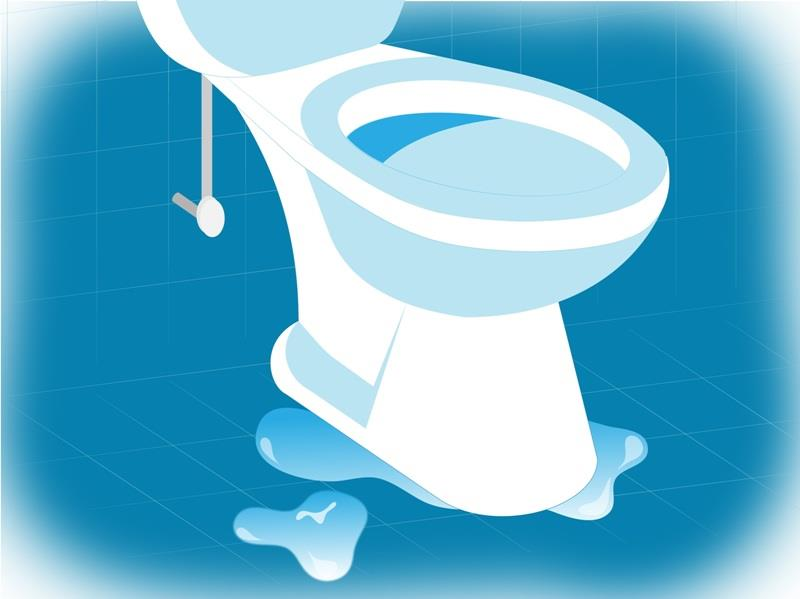
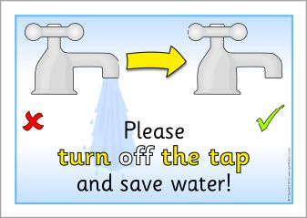
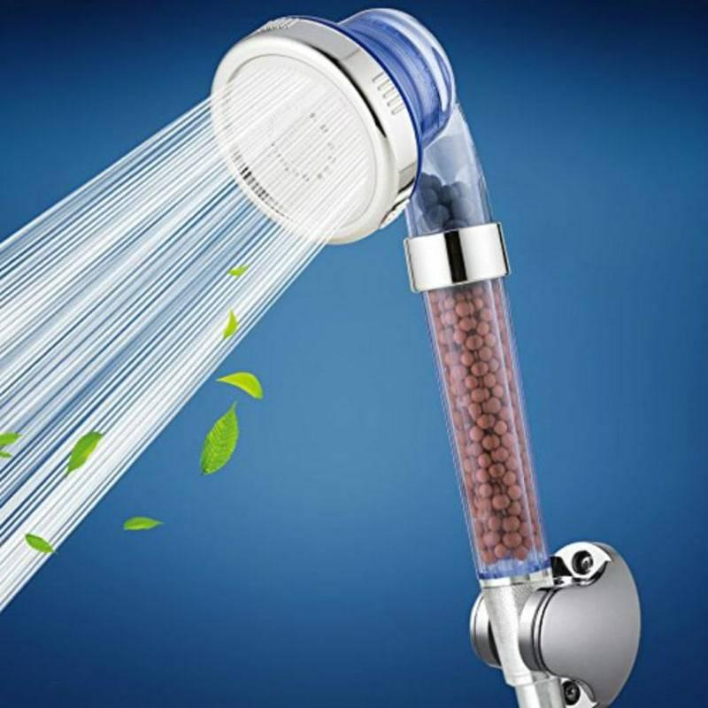
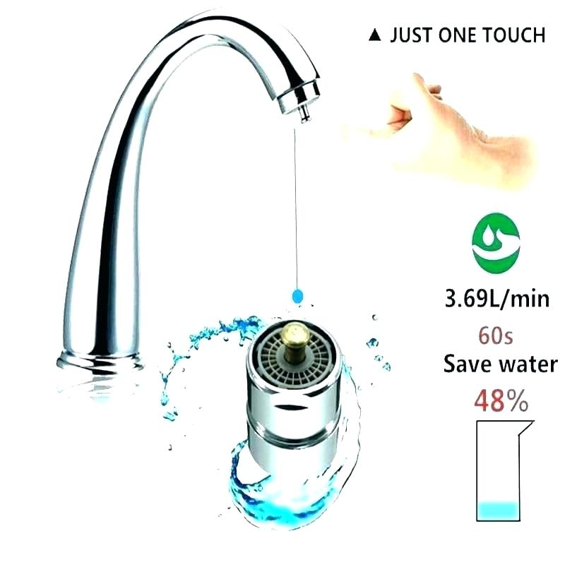
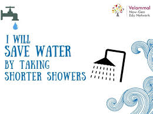
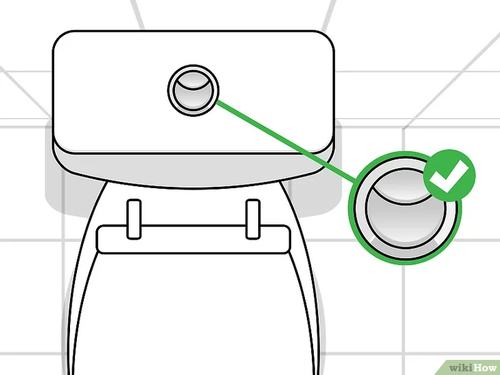

Vee säästmine
Sellel veebilehel te saate teada, kuidas õigesti säästa vett, et loodus ei kannataks ja te saaksite säästa raha.
- Kontrollige kraanide, tualettruumide ja torude lekkeid. Varjatud vee lekked majas võivad olla üle kümne kuupmeetri aastas. Sel põhjusel kontrollige kindlasti oma veevärgisüsteemi lekkeid, eriti lekkivate tualettide ja kraanide osas.

- Ärge unustage hambade pesemise või raseerimise ajal vett välja lülitada. Hammaste pesemise ajal ärge laske vedel niisama voolata; lülitage see välja, kui seda pole vaja. Raseerimise ajal lülitage habemenuga loputamise vahel vesi välja.

- Paigaldage veesäästlikud dušipead. Paljud dušipead tarbivad kuni 10 liitrit vett minutis ja mõned kuni 20. Paigaldage endale veesäästlikud dušipead, mis töötavad sama rõhuga, luues samasugused aistingud nagu tavalised dušipead, kuid samal ajal veedavad nad kaks korda vähem vett.

- Paigaldage aeraatorid segistitele. Aeraatori olemasolu segistitel võimaldab rikastada vett hapnikuga, luues stabiilsema voolu ja tarbides üldiselt vähem vett. Aeraatori paigaldamine on üsna lihtne - see tuleb kruvida ainult kraani külge.

- Õppige kiiremini kümbleda. Võtke vannituppa oma kell või taimer ja proovige vähendada tavalist dušiaega või lülitage sisse üks meloodia ja püüdke kõik toimingud selle lõpuks läbi viia. Dušiaja vähendamine isegi vaid 2 minuti võrra võib säästa kuni 40 liitrit vett.

- Paigaldage tualettruumi ökonoomne paak või kahe tühjendusrežiimiga paak. Ökonoomsed mahutid kulutavad äravoolu kohta kuni 6 liitrit vett, tavalised mahutid aga kolm või isegi neli korda rohkem. Kahe äravoolurežiimiga WC-paagid võimaldavad veeda vähem vett vedelate väljaheidete jaoks ja rohkem tahke aine jaoks.
